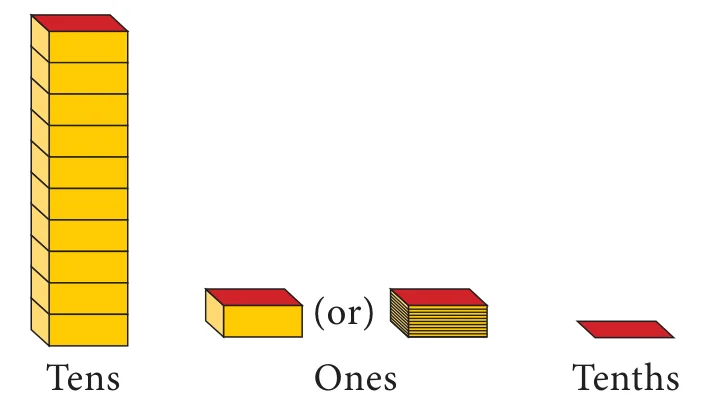
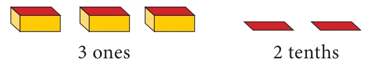
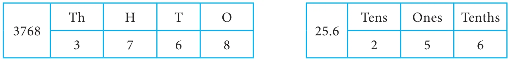
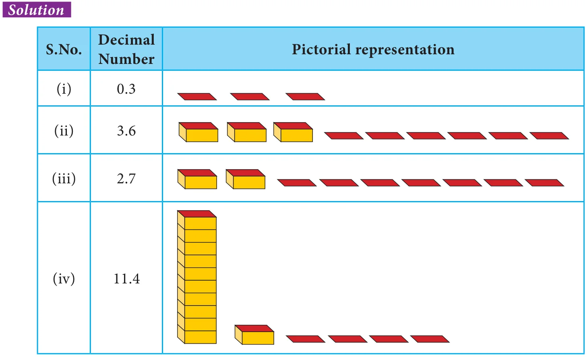
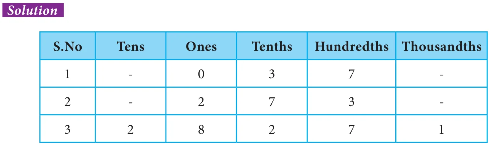

(i) Observe the following pictures which represent tens, ones and tenths

For example, the decimal number 3.2 is 3 ones and 2 tenths that can be represented using the pictorial representations as follows.

Similarly any decimal number can be represented as above

We have studied about place value of digits of a number in primary classes. Now let us extend our learning of place values to decimal digits of a number. Let us recall the expanded form of a number. Consider the number 3768.
The expanded form of 3768 is given by \(3 \times 1000 + 7 \times 100 + 6 \times 10 + 8\).
Now, let us consider a decimal number 235.68
Expressing the decimal number in the expanded form, we get
\(235.68 = 200 + 30 + 5 + \frac{6}{10} + \frac{8}{100}\)
\(= 2 \times 100 + 3 \times 10 + 5 \times 1 + 6 \times \frac{1}{10} + 8 \times \frac{1}{100}\)
Think
The above expression can also be expressed in terms of powers of 10 as follows \(235.68 = 2 \times 10^{2} + 3 \times 10^{1} + 5 \times 10^{0} + 6 \times 10^{-1} + 8 \times 10^{-2}\). Hence, in any number, when we move towards right from one digit to the next, the place value of a digit is divided by \(10^{1}\).
Representing the two numbers 3768 and 25.6 in the place value grid, we get

In the beginning of this chapter, we came across the discussion about the length of the pencils of Kavin and Kala. Those lengths can also be represented in the place value grid as follows.

We know that the digit to the right of ones place is known as tenths and the point is called decimal point which separates the integral part and decimal part of a number.
In the above situation, we have expressed numbers with one decimal digit in place value grid. Now to express numbers with two decimal digits in place value grid, let us consider the example already discussed in the introduction part.
Ravi has purchased dress materials for pongal festival. The length of the pant material is 4 m 75 cm. To express the centimetre in terms of metres, we proceed as follows.
We know that

\(100\ \mathit{cm} = 1\ \mathit{m}\)
\(1\ \mathit{cm} = \frac{1}{100}\ \mathit{m}\)
Therefore one centimetre can be represented as one hundredth of a metre.
Similarly, \(75\ \mathit{cm} = \frac{75}{100} = 0.75\ \mathit{m}\)

So the length of the pant material is \(4 + 0.75\ \mathit{m}\)
That is 4.75 m. It can be read as four and seventy five hundredth of a metre or four point seven five metres.


Note that the tenth and hundredth place values of a number can be written as \(\frac{1}{10}\) and \(\frac{1}{100}\) respectively.
Example 1.1 Represent the following decimal numbers pictorially.
(i) 0.3 (ii) 3.6 (iii) 2.7 (iv) 11.4

Example 1.2 Write the following in the place value grid and find the place value of the underlined digits.
(i) \(0.3\underline{7}\) (ii) \(2.\underline{7}3\) (iii) \(28.2\underline{7}1\)

- The place value of 7 in 0.37 is Hundredth.
- The place value of 7 in 2.73 is Tenth.
- The place value of 7 in 28.271 is Hundredth.
Example 1.3 The height of a person is 165 cm. Express this height in metre.
Solution
Given, height of the person \(= 165\ \mathit{cm}\).

Hence, the height of the person \(= \frac{165}{100} = 1.65\ \mathit{m}\).
Example 1.4 Praveen goes trekking with his friends. He has to record the distance in kilometres in his sports book. Can you help him?
The trekking record for four days are given below
(i) 4 m (ii) 28 m (iii) 537 m (iv) 3983 m
Solution

- \(4\ \mathit{m} = \frac{4}{1000}\ \mathit{km} = 0.004\ \mathit{km}\)
- \(28\ \mathit{m} = \frac{28}{1000}\ \mathit{km} = 0.028\ \mathit{km}\)
- \(537\ \mathit{m} = \frac{537}{1000}\ \mathit{km} = 0.537\ \mathit{km}\)
- \(3983\ \mathit{m} = \frac{3983}{1000}\ \mathit{km} = 3.983\ \mathit{km}\)
So, Praveen's trekking record is 0.004 km, 0.028 km, 0.537 km, 3.983 km.
Example 1.5 Express the numbers given in expanded form in the place value grid. Also write its decimal representation.
(i) \(3 + \frac{5}{10} + \frac{3}{100} + \frac{4}{1000}\) (ii) \(40 + 6 + \frac{7}{10} + \frac{2}{100} + \frac{6}{1000}\)
Solution
(i)

\(3 + \frac{5}{10} + \frac{3}{100} + \frac{4}{1000} = 3.534\)
(ii)

\(40 + 6 + \frac{7}{10} + \frac{2}{100} + \frac{6}{1000} = 46.726\)